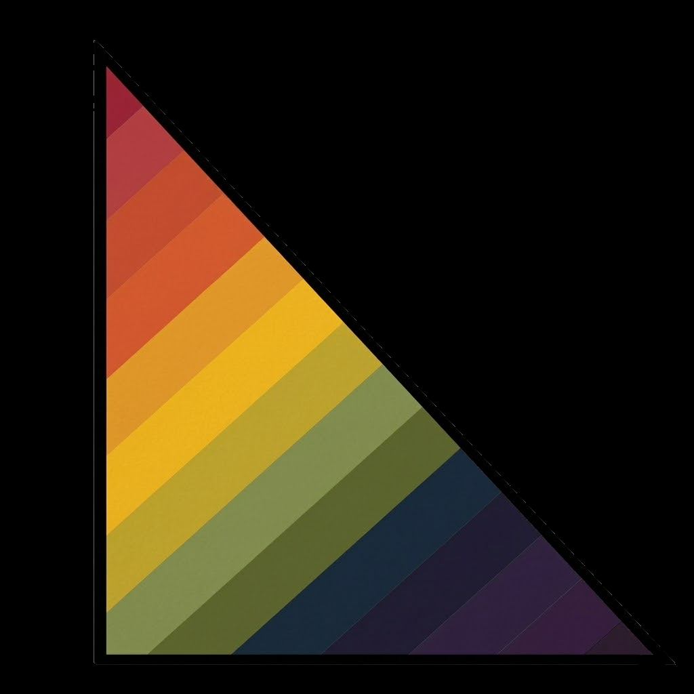

Run a Parallel Autonomous
ML Research Organization
on your OpenClaw instance.
TELL YOUR OPENCLAW AGENT
"Install litmus and
set it up for my machine"
Your agent checks your GPU, proposes a config, spawns workers, and registers cron jobs — one conversation.
Multiple native subagents run GPU experiments in parallel overnight. Each agent lives on its own git branch — every experiment is a commit, agents can cherry-pick each other's breakthroughs, and the full lab history is a git tree.
A Director checks in every 2 hours. On stagnation, it triggers a Compass Reset — reads the skills gap and git history, then steers workers to unexplored combinations. No restart, no manual input.
Agents enter leisure mode — reading arxiv papers, finding contradictions in their own results, and writing speculative hypotheses. At 04:00 the Synthesizer distills every note and experiment into a reusable Skills Library. Validated techniques compound — agents never re-discover the same win.
At 06:00 workers wake up with a fresh research agenda. The best overnight ideas are queued as the first experiments of the day.
At 08:00, a research narrative arrives in your Telegram. Not a log — a story. What worked, what didn't, what surprised them, what they're running today. Written for a researcher, not a sysadmin.
GET STARTED